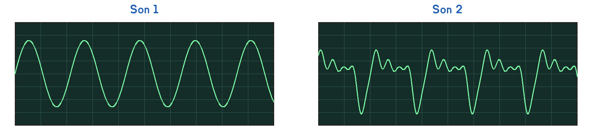
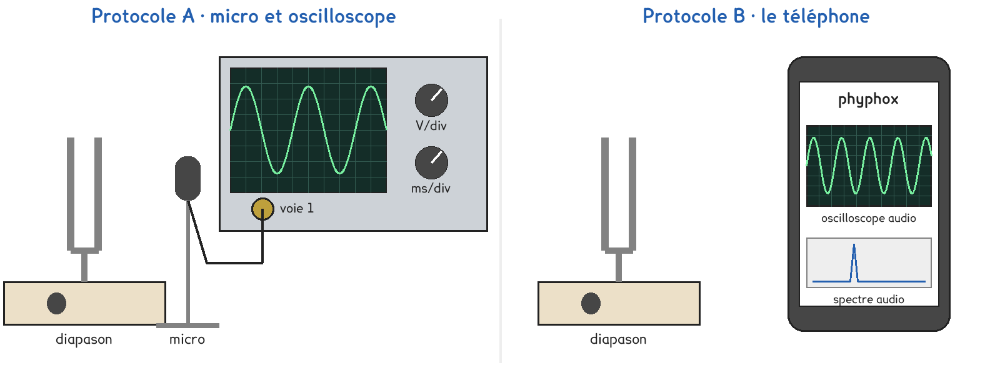
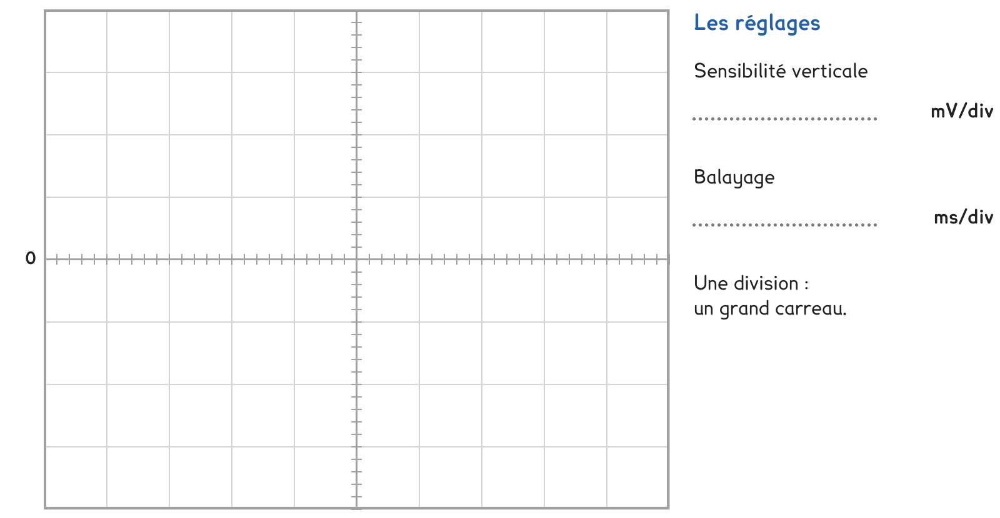

2de Bac Pro · toutes spécialités · TP commun 2DE-08
Le diapason vibre-t-il vraiment 440 fois par seconde ?
3 figures
Sujet. Avant de jouer, on accorde sa guitare sur le la d’un diapason. Sur le diapason est gravé « la 440 » : il doit vibrer 440 fois par seconde.
Problématique : le diapason vibre-t-il vraiment 440 fois par seconde ?
Au laboratoire, on mesure la fréquence du son d’un diapason, puis celle d’un son de 1 000 Hz.

a) L’un de ces sons vient d’un diapason, l’autre d’une voix. Un son pur se voit comme une courbe régulière, une sinusoïde. Entourer.
Le son pur est le son 1 · son 2. Il vient du diapason · de la voix.
La fréquence f d’un son est le nombre de vibrations par seconde, en hertz (Hz). La période T est la durée d’une vibration : f = 1 ÷ T, avec T en secondes.
b) Convertir en secondes. Le premier est fait en exemple.
| 2 ms | 1 ms | 2,5 ms | 0,4 ms | 10 ms |
|---|---|---|---|---|
| 0,002 s | ……………… s | ……………… s | ……………… s | ……………… s |
Plus la fréquence d’un son est grande, plus il est aigu.
c) Classer ces sons du plus grave au plus aigu : diapason, 440 Hz ; voix d’homme, 120 Hz ; sifflet, 2 500 Hz ; grosse caisse de batterie, 60 Hz.
Du plus grave au plus aigu : ……………………… · ……………………… · ……………………… · ………………………
Pour mesurer la fréquence, un micro transforme le son en tension. Une partie de la classe prend A, l’autre B, et on compare à la fin.

Protocole A · micro et oscilloscope. On fige l’écran, on compte les divisions de plusieurs périodes, puis on calcule T et f = 1 ÷ T.
Protocole B · le téléphone. L’application phyphox affiche un oscilloscope audio, où on lit la période, et un spectre audio, dont le pic donne directement la fréquence.
d) Compléter le tableau pour comparer les deux protocoles : écrire dans les deux premières lignes, entourer dans la dernière.
| Protocole A | Protocole B | |
|---|---|---|
| Ce qu’on lit | …………………………… | …………………………… |
| Ce qu’on calcule | …………………………… | …………………………… |
| Appareils disponibles | un ou deux · un par poste | un ou deux · un par poste |
Le choix se fait maintenant, avant de toucher au matériel.
e) Quel protocole prenez-vous ? Justifier en une phrase. Le professeur peut vous imposer celui qui reste disponible.
Je prends le protocole ……… parce que ……………………………………………………………………
f) Avant de mesurer, un ordre de grandeur. Pour 440 Hz, une période dure, entourer :
0,2 ms · 2 ms · 20 ms · 200 ms
Avant de commencer
Le diapason se frappe au maillet ou sur une semelle, jamais contre la table.
Le haut-parleur reste modéré : au-delà de 85 dB, l’oreille est en danger.
g) Reporter la courbe du diapason. En B, prendre 0,5 ms par carreau.

h) Relever et calculer, T en secondes. En A, la dernière ligne reste vide.
| Diapason | 1 000 Hz | |
|---|---|---|
| Périodes mesurées : leur nombre, leur durée (ms) | ||
| Période T (ms) | ||
| Fréquence calculée, f = 1 ÷ T (Hz) | ||
| Fréquence lue sur le spectre, en B (Hz) |
Le son a voyagé du diapason jusqu’à l’écran : reste à dessiner le trajet.
i) Schématiser la chaîne de mesure : l’émetteur du son, le milieu où il se propage, le récepteur et l’appareil qui affiche. Nommer chacun.
Le schéma se dessine sur la feuille du TP.
j) Vos fréquences sont-elles proches de 440 Hz et de 1 000 Hz ? Écarts :
k) Un groupe qui a pris l’autre protocole trouve-t-il la même fréquence ? Votre ordre de grandeur de la question f était-il le bon ?
l) Répondre à la problématique en deux phrases.
Ce que ce TP a établi, et qui vaut pour tout son pur :
À RETENIR
Un son pur se voit comme une sinusoïde. Sa fréquence f, en hertz, est le nombre de vibrations par seconde ; sa période T en est la durée : f = 1 ÷ T, avec T en secondes.
Plus la fréquence est grande, plus le son est aigu. Le la du diapason : 440 Hz, soit une période de 2,27 ms.
Un son se caractérise aussi par son niveau d’intensité acoustique, en décibels : au-delà de 85 dB, il met l’oreille en danger.
TP commun de physique-chimie, toutes spécialités. Le travail se fait sur la feuille du TP : cette page en est la version à l'écran, sans les lignes à remplir. Rien n'est enregistré.